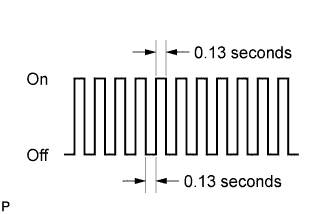

AUTOMATIC TRANSMISSION SYSTEM > CHECK MODE PROCEDURE |
| DESCRIPTION |
Check mode has a higher sensitivity to malfunctions and can detect malfunctions that normal mode cannot detect. Check mode can also detect all the malfunctions that normal mode can detect. In check mode, DTCs are stored with 1-trip detection logic.
| CHECK MODE PROCEDURE |
Make sure that the following conditions are met:
Battery positive voltage 11 V or higher.
Throttle valve fully closed.
Shift lever in P or N.
A/C off.
Connect the intelligent tester to the DLC3.
Turn the engine switch on (IG).
Turn the intelligent tester on.
Enter the following menus: Powertrain / Engine and ECT / Utility / Check Mode.
|  |
Change the ECM to check mode and check that the MIL flashes as shown in the illustration.
Start the engine. The MIL should turn off after the engine starts.
Perform "Monitor Drive Pattern" for the ECT test (Click here), or reproduce the conditions of the malfunction described by the customer.
After reproducing the malfunction conditions, use the intelligent tester to check the DTCs and freeze frame data.